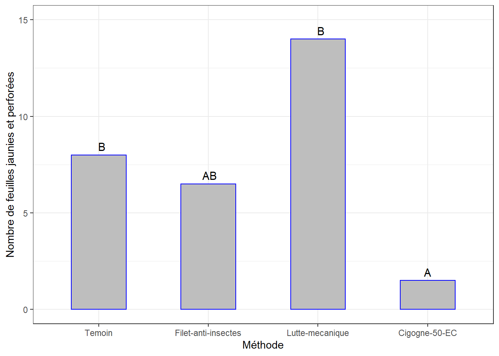

Chapitre 7 Jaunissement et perforation
Évaluer si le Nombre de feuilles jaunies et perforées, sous l’impact éventuellement des attaques d’insectes, diffèrent significativement selon la méthode de contrôle appliquée.
Jeu de données kam.csv qui contient différentes mesures dont les nombres de feuilles jaunies et perforées, comptés en 4 séances.
On pourrait également évaluer si les différentes méthodes ont des intensités d’attaques de ce type, significativement différentes avec le temps. On comparera les effets des méthodes séance par séance, puis à l’aide d’une figure on appréciera s’il y a une évolution en fonction du temps.
7.1 Les données
df <- read_csv("data/kam.csv")
df <- df %>%
mutate(id = rep(1:8, 4), .before = 1, seance = factor(seance),
methode = factor(methode, levels = c("Temoin", "Filet-anti-insectes", "Lutte-mecanique", "Cigogne-50-EC")),
bloc = factor(bloc)) %>%
select(id, seance, bloc, methode, nfjp) %>%
mutate(id = factor(id))Le tableau est déjà structuré en format long en Excel. J’ai ajouté un identifiant (id) pour les échantillons des seances.
Afficher quelques lignes aléatoires par methode pour visualiser le dataframe :
## # A tibble: 16 x 5
## id seance bloc methode nfjp
## <fct> <fct> <fct> <fct> <dbl>
## 1 5 Semaine 1 2 Temoin 7
## 2 6 Semaine 1 2 Filet-anti-insectes 7
## 3 7 Semaine 1 2 Lutte-mecanique 0
## 4 4 Semaine 1 1 Cigogne-50-EC 4
## 5 5 Semaine 2 2 Temoin 4
## 6 6 Semaine 2 2 Filet-anti-insectes 9
## 7 3 Semaine 2 1 Lutte-mecanique 17
## 8 8 Semaine 2 2 Cigogne-50-EC 0
## 9 1 Semaine 3 1 Temoin 8
## 10 2 Semaine 3 1 Filet-anti-insectes 4
## 11 7 Semaine 3 2 Lutte-mecanique 7
## 12 4 Semaine 3 1 Cigogne-50-EC 4
## 13 1 Semaine 4 1 Temoin 6
## 14 2 Semaine 4 1 Filet-anti-insectes 5
## 15 3 Semaine 4 1 Lutte-mecanique 3
## 16 8 Semaine 4 2 Cigogne-50-EC 97.2 Visualisation boxplots
bxp <- ggplot(df, aes(x = methode, y = nfjp, fill = methode)) +
geom_boxplot() +
facet_grid(seance ~ .) +
ylab("Nombre de feuilles jaunies et perforées") +
#theme(axis.text.x = element_text(angle = 45, color = "black", vjust = 1, hjust = 1)) +
theme_bw()
bxpIl y a des variations notables entre les méthodes et également d’une seance à l’autre.
7.3 Détection des observations aberrantes extrêmes
## [1] seance methode id bloc nfjp is.outlier is.extreme
## <0 rows> (or 0-length row.names)=> Pas d’observation aberrante extrême pour toutes les seances.
7.4 L’ANOVA
7.4.1 Séance 1 (1ère semaine de mesure)
7.4.1.1 Le modèle
df1 <- df %>% filter(seance == "Semaine 1")
lm1 <- glm(nfjp ~ methode, data = df1, family = poisson)
Anova(lm1)## Analysis of Deviance Table (Type II tests)
##
## Response: nfjp
## LR Chisq Df Pr(>Chisq)
## methode 13.255 3 0.004116 **
## ---
## Signif. codes: 0 '***' 0.001 '**' 0.01 '*' 0.05 '.' 0.1 ' ' 1La p-value < 0.01 => différence très significative entre les effets de certaines méthodes de contrôle sur le Nombre de feuilles jaunies et perforées, à la Semaine 1.
7.4.1.2 Comparaisons par paires
pwc_lm1 = emmeans(lm1, ~ methode)
(cm1 <- pairs(pwc_lm1) %>% as_tibble() %>%
mutate(no_contrast = c("Contraste 1", "Contraste 2", "Contraste 3", "Contraste 4", "Contraste 5", "Contraste 6")))## # A tibble: 6 x 7
## contrast estimate SE df z.ratio p.value no_contrast
## <chr> <dbl> <dbl> <dbl> <dbl> <dbl> <chr>
## 1 Temoin - (Filet-anti-in~ -6.99e-17 5 e-1 Inf -1.40e-16 1 Contraste 1
## 2 Temoin - (Lutte-mecaniq~ 1.97e+ 1 4.04e+3 Inf 4.87e- 3 1.00 Contraste 2
## 3 Temoin - (Cigogne-50-EC) 6.93e- 1 6.12e-1 Inf 1.13e+ 0 0.670 Contraste 3
## 4 (Filet-anti-insectes) -~ 1.97e+ 1 4.04e+3 Inf 4.87e- 3 1.00 Contraste 4
## 5 (Filet-anti-insectes) -~ 6.93e- 1 6.12e-1 Inf 1.13e+ 0 0.670 Contraste 5
## 6 (Lutte-mecanique) - (Ci~ -1.90e+ 1 4.04e+3 Inf -4.70e- 3 1.00 Contraste 6=> Pas de contrastes différents déterminés. Selon ce poste consulté en ligne, ce genre de situations peuvent se présenter lorsque les échantillons (groupes) sont de petite taille. La puissance statistique du test de comparaisons multiples n’est donc pas assez élevée pour détecter des différences significatives. En général, il faut se fier aux résultats des comparaisons multiples, sauf si c’est le test protected Fisher LSD qui est utilisé.
=> Méthode de Tukey ci-dessous, même résultat.
tph1 <- df1 %>%
pairwise_t_test(nfjp ~ methode,
paired = TRUE,
p.adjust.method = "bonferroni")
tph1 %>%
select(group1, group2, p, p.adj, p.adj.signif)## # A tibble: 6 x 5
## group1 group2 p p.adj p.adj.signif
## <chr> <chr> <dbl> <dbl> <chr>
## 1 Temoin Filet-anti-insectes NaN NaN ""
## 2 Temoin Lutte-mecanique 0.41 1 "ns"
## 3 Temoin Cigogne-50-EC 0.758 1 "ns"
## 4 Filet-anti-insectes Lutte-mecanique 0.41 1 "ns"
## 5 Filet-anti-insectes Cigogne-50-EC 0.758 1 "ns"
## 6 Lutte-mecanique Cigogne-50-EC 0.5 1 "ns"(cm1_moy <- summarySE(df1,
measurevar = "nfjp",
groupvars = "methode") %>%
data.table::setorder(-nfjp))## methode N nfjp sd se ci
## 1 Temoin 2 4 4.242641 3 38.11861
## 2 Filet-anti-insectes 2 4 4.242641 3 38.11861
## 4 Cigogne-50-EC 2 2 2.828427 2 25.41241
## 3 Lutte-mecanique 2 0 0.000000 0 0.00000## methode N nfjp sd se ci groups
## 1 Temoin 2 4 4.242641 3 38.11861 a
## 2 Filet-anti-insectes 2 4 4.242641 3 38.11861 a
## 4 Cigogne-50-EC 2 2 2.828427 2 25.41241 a
## 3 Lutte-mecanique 2 0 0.000000 0 0.00000 a=> Du moment où cette méthode ici est faite à la main, très facile de se tromper. Toujours se référer à la figure et au tableau des contrastes.
Sous forme graphique …
ggplot(data = cm1_moy, mapping = aes(x = methode, y = nfjp)) +
geom_bar(stat = "identity", color = "blue", fill = "grey", width = 0.5) +
#geom_errorbar(aes(ymin = nfjp - ci, ymax = nfjp + ci), width =.1) +
geom_text(aes(label = groups), vjust = -0.5, size = 4) +
#ylim(0, 13) +
xlab("Méthodes") + ylab("Nombre de feuilles jaunies et perforées") +
#theme(axis.text.x = element_text(angle = 45, color = "black", vjust = 1, hjust = 1)) +
theme_bw()7.4.2 Séance 2 (2è semaine de mesure)
7.4.2.1 Le modèle
## [1] id seance bloc methode nfjp is.outlier is.extreme
## <0 rows> (or 0-length row.names)## Analysis of Deviance Table (Type II tests)
##
## Response: nfjp
## LR Chisq Df Pr(>Chisq)
## methode 23.641 3 2.969e-05 ***
## ---
## Signif. codes: 0 '***' 0.001 '**' 0.01 '*' 0.05 '.' 0.1 ' ' 1La p-value < 0.01 => différence très significative entre les effets de certaines méthodes de contrôle sur le Nombre de feuilles jaunies et perforées, à la Semaine 2.
7.4.2.2 Comparaisons par paires
pwc_lm2 = emmeans(lm2, ~ methode)
(cm2 <- pairs(pwc_lm2) %>% as_tibble() %>%
mutate(no_contrast = c("Contraste 1", "Contraste 2", "Contraste 3", "Contraste 4", "Contraste 5", "Contraste 6")))## # A tibble: 6 x 7
## contrast estimate SE df z.ratio p.value no_contrast
## <chr> <dbl> <dbl> <dbl> <dbl> <dbl> <chr>
## 1 Temoin - (Filet-anti-insecte~ 0.208 0.373 Inf 0.556 0.945 Contraste 1
## 2 Temoin - (Lutte-mecanique) -0.560 0.313 Inf -1.79 0.280 Contraste 2
## 3 Temoin - (Cigogne-50-EC) 1.67 0.629 Inf 2.66 0.0390 Contraste 3
## 4 (Filet-anti-insectes) - (Lut~ -0.767 0.336 Inf -2.29 0.101 Contraste 4
## 5 (Filet-anti-insectes) - (Cig~ 1.47 0.641 Inf 2.29 0.100 Contraste 5
## 6 (Lutte-mecanique) - (Cigogne~ 2.23 0.607 Inf 3.68 0.00135 Contraste 6Cette classification établie une différence significative entre les effets pour les contrastes 3 et 6.
Moyennes et cart-types et ajout d’une colonne à la main pour constituer les groupes.
(cm2_moy <- summarySE(df2,
measurevar = "nfjp",
groupvars = "methode") %>%
data.table::setorder(-nfjp))## methode N nfjp sd se ci
## 3 Lutte-mecanique 2 14.0 4.242641 3.0 38.11861
## 1 Temoin 2 8.0 5.656854 4.0 50.82482
## 2 Filet-anti-insectes 2 6.5 3.535534 2.5 31.76551
## 4 Cigogne-50-EC 2 1.5 2.121320 1.5 19.05931## methode N nfjp sd se ci groups
## 3 Lutte-mecanique 2 14.0 4.242641 3.0 38.11861 a
## 1 Temoin 2 8.0 5.656854 4.0 50.82482 ab
## 2 Filet-anti-insectes 2 6.5 3.535534 2.5 31.76551 bc
## 4 Cigogne-50-EC 2 1.5 2.121320 1.5 19.05931 cSous forme graphique …
ggplot(data = cm2_moy, mapping = aes(x = methode, y = nfjp)) +
geom_bar(stat = "identity", color = "blue", fill = "grey", width = 0.5) +
#geom_errorbar(aes(ymin = nfjp - ci, ymax = nfjp + ci), width =.1) +
geom_text(aes(label = groups), vjust = -0.5, size = 4) +
#ylim(0, 13) +
xlab("Méthodes") + ylab("Nombre de feuilles jaunies et perforées") +
#theme(axis.text.x = element_text(angle = 45, color = "black", vjust = 1, hjust = 1)) +
theme_bw()
7.4.3 Séance 3 (3è semaine de mesure)
7.4.3.1 Le modèle
## # A tibble: 1 x 7
## id seance bloc methode nfjp is.outlier is.extreme
## <fct> <fct> <fct> <fct> <dbl> <lgl> <lgl>
## 1 5 Semaine 3 2 Temoin 14 TRUE FALSE=> Pas d’observation supposée extrême.
## Analysis of Deviance Table (Type II tests)
##
## Response: nfjp
## LR Chisq Df Pr(>Chisq)
## methode 9.6129 3 0.02216 *
## ---
## Signif. codes: 0 '***' 0.001 '**' 0.01 '*' 0.05 '.' 0.1 ' ' 1La p-value < 0.05 => différence significative entre les effets de certaines méthodes de contrôle sur le Nombre de feuilles jaunies et perforées à la Semaine 3.
7.4.3.2 Comparaisons par paires
pwc_lm3 = emmeans(lm3, ~ methode)
(cm3 <- pairs(pwc_lm3) %>% as_tibble() %>%
mutate(no_contrast = c("Contraste 1", "Contraste 2", "Contraste 3", "Contraste 4", "Contraste 5", "Contraste 6")))## # A tibble: 6 x 7
## contrast estimate SE df z.ratio p.value no_contrast
## <chr> <dbl> <dbl> <dbl> <dbl> <dbl> <chr>
## 1 Temoin - (Filet-anti-inse~ 1.01e+ 0 0.413 Inf 2.45e+ 0 0.0680 Contraste 1
## 2 Temoin - (Lutte-mecanique) 6.06e- 1 0.359 Inf 1.69e+ 0 0.329 Contraste 2
## 3 Temoin - (Cigogne-50-EC) 1.01e+ 0 0.413 Inf 2.45e+ 0 0.0680 Contraste 3
## 4 (Filet-anti-insectes) - (~ -4.05e- 1 0.456 Inf -8.88e- 1 0.811 Contraste 4
## 5 (Filet-anti-insectes) - (~ 2.22e-16 0.500 Inf 4.44e-16 1 Contraste 5
## 6 (Lutte-mecanique) - (Cigo~ 4.05e- 1 0.456 Inf 8.88e- 1 0.811 Contraste 6=> Pas de contrastes différents. => se fier aux résultats des comparaisons multiples … => Méthode de Tukey ci-dessous, même résultat.
tph3 <- df3 %>%
pairwise_t_test(nfjp ~ methode,
paired = TRUE,
p.adjust.method = "bonferroni")
tph3 %>%
select(group1, group2, p, p.adj, p.adj.signif)## # A tibble: 6 x 5
## group1 group2 p p.adj p.adj.signif
## <chr> <chr> <dbl> <dbl> <chr>
## 1 Temoin Filet-anti-insectes 0.258 1 "ns"
## 2 Temoin Lutte-mecanique 0.242 1 "ns"
## 3 Temoin Cigogne-50-EC 0.258 1 "ns"
## 4 Filet-anti-insectes Lutte-mecanique 0.295 1 "ns"
## 5 Filet-anti-insectes Cigogne-50-EC NaN NaN ""
## 6 Lutte-mecanique Cigogne-50-EC 0.295 1 "ns"Moyennes et cart-type et ajout d’une colonne à la main pour constituer les groupes.
(cm3_moy <- summarySE(df3,
measurevar = "nfjp",
groupvars = "methode") %>%
data.table::setorder(-nfjp))## methode N nfjp sd se ci
## 1 Temoin 2 11 4.242641 3 38.11861
## 3 Lutte-mecanique 2 6 1.414214 1 12.70620
## 2 Filet-anti-insectes 2 4 0.000000 0 0.00000
## 4 Cigogne-50-EC 2 4 0.000000 0 0.00000## methode N nfjp sd se ci groups
## 1 Temoin 2 11 4.242641 3 38.11861 a
## 3 Lutte-mecanique 2 6 1.414214 1 12.70620 a
## 2 Filet-anti-insectes 2 4 0.000000 0 0.00000 a
## 4 Cigogne-50-EC 2 4 0.000000 0 0.00000 aSous forme graphique …
ggplot(data = cm3_moy, mapping = aes(x = methode, y = nfjp)) +
geom_bar(stat = "identity", color = "blue", fill = "grey", width = 0.5) +
#geom_errorbar(aes(ymin = nfjp - ci, ymax = nfjp + ci), width =.1) +
geom_text(aes(label = groups), vjust = -0.5, size = 4) +
#ylim(0, 13) +
xlab("Méthodes") + ylab("Nombre de feuilles jaunies et perforées") +
#theme(axis.text.x = element_text(angle = 45, color = "black", vjust = 1, hjust = 1)) +
theme_bw()7.4.4 Séance 4 (4è semaine de mesure)
7.4.4.1 Le modèle
## # A tibble: 1 x 7
## id seance bloc methode nfjp is.outlier is.extreme
## <fct> <fct> <fct> <fct> <dbl> <lgl> <lgl>
## 1 8 Semaine 4 2 Cigogne-50-EC 9 TRUE FALSE=> Pas d’observation supposée aberrante et extrême.
## Analysis of Deviance Table (Type II tests)
##
## Response: nfjp
## LR Chisq Df Pr(>Chisq)
## methode 1.9529 3 0.5822La p-value > 0.05 => pas de différence significative entre les effets des méthodes de contrôle sur le Nombre de feuilles jaunies et perforées à la Semaine 4.
7.4.4.2 Comparaisons par paires
pwc_lm4 = emmeans(lm4, ~ methode)
(cm4 <- pairs(pwc_lm4) %>% as_tibble() %>%
mutate(no_contrast = c("Contraste 1", "Contraste 2", "Contraste 3", "Contraste 4", "Contraste 5", "Contraste 6")))## # A tibble: 6 x 7
## contrast estimate SE df z.ratio p.value no_contrast
## <chr> <dbl> <dbl> <dbl> <dbl> <dbl> <chr>
## 1 Temoin - (Filet-anti-insecte~ 0.318 0.465 Inf 0.685 0.903 Contraste 1
## 2 Temoin - (Lutte-mecanique) 0.201 0.449 Inf 0.446 0.970 Contraste 2
## 3 Temoin - (Cigogne-50-EC) -0.241 0.403 Inf -0.599 0.933 Contraste 3
## 4 (Filet-anti-insectes) - (Lut~ -0.118 0.486 Inf -0.242 0.995 Contraste 4
## 5 (Filet-anti-insectes) - (Cig~ -0.560 0.443 Inf -1.26 0.587 Contraste 5
## 6 (Lutte-mecanique) - (Cigogne~ -0.442 0.427 Inf -1.03 0.729 Contraste 6Moyennes et cart-type et ajout d’une colonne à la main pour constituer les groupes (ici on attribue la même lettre).
(cm4_moy <- summarySE(df4,
measurevar = "nfjp",
groupvars = "methode") %>%
data.table::setorder(-nfjp))## methode N nfjp sd se ci
## 4 Cigogne-50-EC 2 7.0 2.8284271 2.0 25.412409
## 1 Temoin 2 5.5 0.7071068 0.5 6.353102
## 3 Lutte-mecanique 2 4.5 2.1213203 1.5 19.059307
## 2 Filet-anti-insectes 2 4.0 1.4142136 1.0 12.706205## methode N nfjp sd se ci groups
## 4 Cigogne-50-EC 2 7.0 2.8284271 2.0 25.412409 a
## 1 Temoin 2 5.5 0.7071068 0.5 6.353102 a
## 3 Lutte-mecanique 2 4.5 2.1213203 1.5 19.059307 a
## 2 Filet-anti-insectes 2 4.0 1.4142136 1.0 12.706205 aSous forme graphique …
7.5 Évolution du Nombre de feuilles jaunies et perforées selon la méthode au cours du temps
7.5.1 Sommaire
## seance methode N nfjp sd se ci
## 1 Semaine 1 Temoin 2 4.0 4.2426407 3.0 38.118614
## 2 Semaine 1 Filet-anti-insectes 2 4.0 4.2426407 3.0 38.118614
## 3 Semaine 1 Lutte-mecanique 2 0.0 0.0000000 0.0 0.000000
## 4 Semaine 1 Cigogne-50-EC 2 2.0 2.8284271 2.0 25.412409
## 5 Semaine 2 Temoin 2 8.0 5.6568542 4.0 50.824819
## 6 Semaine 2 Filet-anti-insectes 2 6.5 3.5355339 2.5 31.765512
## 7 Semaine 2 Lutte-mecanique 2 14.0 4.2426407 3.0 38.118614
## 8 Semaine 2 Cigogne-50-EC 2 1.5 2.1213203 1.5 19.059307
## 9 Semaine 3 Temoin 2 11.0 4.2426407 3.0 38.118614
## 10 Semaine 3 Filet-anti-insectes 2 4.0 0.0000000 0.0 0.000000
## 11 Semaine 3 Lutte-mecanique 2 6.0 1.4142136 1.0 12.706205
## 12 Semaine 3 Cigogne-50-EC 2 4.0 0.0000000 0.0 0.000000
## 13 Semaine 4 Temoin 2 5.5 0.7071068 0.5 6.353102
## 14 Semaine 4 Filet-anti-insectes 2 4.0 1.4142136 1.0 12.706205
## 15 Semaine 4 Lutte-mecanique 2 4.5 2.1213203 1.5 19.059307
## 16 Semaine 4 Cigogne-50-EC 2 7.0 2.8284271 2.0 25.4124097.5.2 Visualisation
ggplot(df_ic, aes(x = seance, y = nfjp, colour = methode, group = methode)) +
geom_line(size = 1) +
geom_point(size = 2) +
ylab("Nombre de feuilles jaunies et perforées") +
theme_bw()
Tendance difficile à exploiter.
Nous savons par les analyses pour chaque seance plus haut, que
- Semaine 1 : p-value < 0.05 mais pas de contrastes différents !
- Semaine 2 : différences d’effet
- Semaine 3 : p-value < 0.05 mais pas de contrastes différents !
- Semaine 4 : pas de différences d’effet
Puisque les données ne répondent pas aux conditions pour évaluer les effets des méthodes au cours du temps, on négligera l’effet des méthodes pour évaluer globalement l’effet du temps.
On pourrait se demander si les nombres de feuilles jaunies et perforées, comptés sur l’ensemble des méthodes, sont significativement différents d’une seance à l’autre (c’est-à-dire avec le temps).
7.5.3 Effet du temps
7.5.3.1 boxplots, facteur temps
7.5.3.2 Valeurs aberrantes, facteur temps
df <- df %>% mutate(id2 = 1:nrow(.), .before = 1)
df_out <- df %>%
group_by(seance) %>%
identify_outliers(nfjp) %>%
select(id2, seance, bloc, methode, is.outlier, is.extreme)
df_out## # A tibble: 2 x 6
## id2 seance bloc methode is.outlier is.extreme
## <int> <fct> <fct> <fct> <lgl> <lgl>
## 1 21 Semaine 3 2 Temoin TRUE FALSE
## 2 32 Semaine 4 2 Cigogne-50-EC TRUE FALSE=> Pas d’observation extrême.
7.5.3.3 Homogénéité des variances et ANOVA, facteur temps
Les autres conditions ont déjà été vérifiées.
lm <- anova_test(data = df,
dv = nfjp, # dependant variable, num
wid = id, # identificateur de cas/échantillon (facteur)
within = seance) # facteur de groupement intra-sujets
get_anova_table(lm)## ANOVA Table (type III tests)
##
## Effect DFn DFd F p p<.05 ges
## 1 seance 3 21 2.284 0.108 0.212=> pas de différence entre semaines.
7.5.3.4 Comparaisons par paires, facteur temps
lmo <- lm(nfjp ~ seance, data = df)
pwc_lmo = emmeans::emmeans(lmo, ~ seance)
(cmo <- pairs(pwc_lmo) %>% as_tibble() %>%
mutate(no_contrast = c("Contraste 1", "Contraste 2", "Contraste 3", "Contraste 4", "Contraste 5", "Contraste 6")))## # A tibble: 6 x 7
## contrast estimate SE df t.ratio p.value no_contrast
## <chr> <dbl> <dbl> <dbl> <dbl> <dbl> <chr>
## 1 Semaine 1 - Semaine 2 -5.00 1.90 28 -2.64 0.0614 Contraste 1
## 2 Semaine 1 - Semaine 3 -3.75 1.90 28 -1.98 0.221 Contraste 2
## 3 Semaine 1 - Semaine 4 -2.75 1.90 28 -1.45 0.480 Contraste 3
## 4 Semaine 2 - Semaine 3 1.25 1.90 28 0.659 0.911 Contraste 4
## 5 Semaine 2 - Semaine 4 2.25 1.90 28 1.19 0.640 Contraste 5
## 6 Semaine 3 - Semaine 4 1.00 1.90 28 0.527 0.952 Contraste 6=> Contrate 2 pour cette méthode.
tph <- df %>%
pairwise_t_test(nfjp ~ seance,
paired = TRUE,
p.adjust.method = "bonferroni")
tph %>%
select(group1, group2, p, p.adj, p.adj.signif)## # A tibble: 6 x 5
## group1 group2 p p.adj p.adj.signif
## <chr> <chr> <dbl> <dbl> <chr>
## 1 Semaine 1 Semaine 2 0.087 0.523 ns
## 2 Semaine 1 Semaine 3 0.023 0.137 ns
## 3 Semaine 1 Semaine 4 0.111 0.666 ns
## 4 Semaine 2 Semaine 3 0.609 1 ns
## 5 Semaine 2 Semaine 4 0.391 1 ns
## 6 Semaine 3 Semaine 4 0.499 1 nsC’est la p-value qui nous intéresse et elle est > 0.05 pour tous les contrastes.